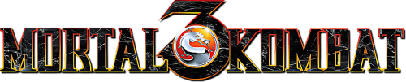
Move List/Bios - Arcade/Home (Universal)


You can e-mail corrections/additions to The Webmaster
Last updated: 04/07/26
It's recommended that your controls match the default setting.
Key:
U = Up/Jump
D = Down/Crouch
F = Forward/Toward
B = Back/Away
| Universal: HP = High Punch LP = Low Punch HK = High Kick LK = Low Kick BL = Block RN = Run |
Xbox: HP = X LP = A HK = Y LK = B BL = RT RN = LT |
PlayStation: HP = ▢ LP = ✕ HK = Δ LK = O BL = L1/R1 RN = L2/R2 |
| Super Nintendo: HP = Y LP = B HK = X LK = A BL = L Trigger RN = R Trigger |
Genesis 3 Pad: HP = (Back+A) LP = A HK = (Back+C) LK = C BL = B RN = START |
Genesis 6 Pad: HP = X LP = A HK = Z LK = C BL = B RN = Y |
Close Quarters:
Throw: LP (Close)
Head-Blow: HP (Close)
Knee: LK/HK (Close)
Crouched Moves:
Crouched Block: (D+BL)
Crouched Punch: (D+LP)
Uppercut: (D+HP)
Crouched Low Kick: (D+LK)
Crouched High Kick: (D+HK)
Spin Moves:
Foot Sweep: (B+LK)
Roundhouse Kick: (B+HK)
Aerial Moves:
Flying Punch: (U/UF/UB+LP/HP)
Flying Kick: (U/UF/UB+LK/HK)
Babalities & Friendships: You must not press BL in the final round.
Mercy: (Hold RN), D, D, D, (Release RN) (Outside Sweep) Must be executed at the end of the third round.
Animality: Must perform a (Mercy), then defeating them yet again in the final round of Kombat.
Stage Fatalities available: The Subway, Bell Tower, Pit 3.
Finisher Distances Explained:
Close: Right next to your opponent.
Sweep: A couple of steps away (close enough to land a sweep).
Outside Sweep: Just beyond sweep range.
Half Screen: About one jump distance away from your opponent.
Full Screen: As far apart as possible (opponent at the other side of the screen).
Anywhere: Distance doesn't matter, can be any range (outside sweep or further works best).
Note: (Hold BL), in italics for Fatality inputs means BL is optional. You do not need to hold BL to make the Fatality work, although it may be easier if you do.
CyraxBio:
Cyrax is unit LK-4D4. The second of three prototype cybernetic ninjas built by the Lin Kuei. Like his counterparts, Cyrax's last programmed command is to find and terminate the rogue ninja, Sub-Zero. Without a soul, Cyrax goes undetected by Shao Kahn and
remains a possible threat against his occupation of Earth.
Special Moves:
Green Net: B, B, LK
Close Bomb Toss: (Hold LK), B, B, HK
Far Bomb Toss: (Hold LK), F, F, HK
Teleport: F, D, BL
Air Throw: (Opponent In Air), D, F, BL, (Cyrax Rushes In), LP (Throws)
Finishers: 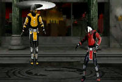 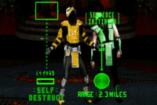 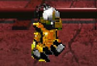 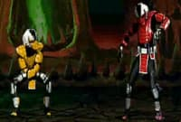 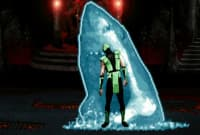
Fatality 1 - Heli-Chopper: (Hold BL), D, D, U, D, HP (Anywhere)
Fatality 2 - Self-Destruct: (Hold BL), D, D, F, U, RN (Close)
Babality: F, F, B, HP (Anywhere)
Friendship - The Charleston: RN, RN, RN, U (Anywhere)
Animality - Shark: (Hold BL), U, U, D, D (Close)
Stage Fatality: RN, BL, RN (Close)
JaxBio:
After failing to convince his superiors of the coming Outworld menace, Jax begins to covertly prepare for future battle with Kahn's minions. He outfits both arms with indestructible bionic implants. This is a war Jax is prepared to win.
Special Moves:
Single Missile: B, F, HP
Double Missiles: F, F, B, B, HP
Gotcha Grab: F, F, LP (Tap LP Rapidly for more punches)
Quad Slam: (Tap HP Rapidly, While Performing a Throw)
Ground Pound: (Hold LK 3 sec.), (Release LK)
Back Breaker: BL (In Air, Close)
Dash Punch: F, F, HK
Finishers: 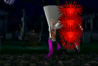 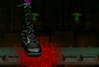 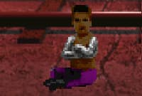 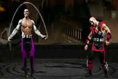 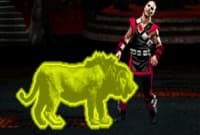
Fatality 1 - Slice 'em Up: (Hold BL), U, D, F, U, (Release BL) (Close)
Fatality 2 - Giant Boot: RN, BL, RN, RN, LK (Half Screen-Full Screen)
Babality: D, D, D, LK (Anywhere)
Friendship - Jump Rope: LK, RN, RN, LK (Anywhere)
Animality - Lion: (Hold LP), F, F, D, F, (Release LP) (Close)
Stage Fatality: D, F, D, LP (Close)
KabalBio:
As a Chosen Warrior, his identity is a mystery to all. It's believed that he is the survivor of an attack by Shao Kahn's extermination squads. As a result, he is viciously scarred and kept alive only by artificial respirators and a rage for ending Shao
Kahn's conquest.
Special Moves:
Plasma Blast: B, B, HP (Also in Air)
Nomad Dash: B, F, LK
Ground Saw: B, B, B, RN
Finishers: 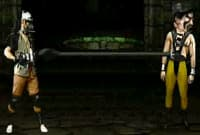 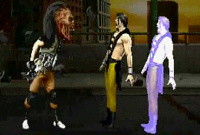 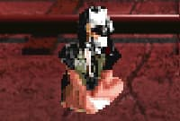 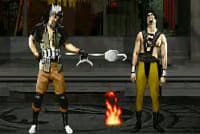 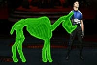
Fatality 1 - Head Inflate: D, D, B, F, BL (Sweep-Half Screen)
Fatality 2 - Heart Attack: RN, BL, BL, BL, HK (Close)
Babality: RN, RN, LK (Anywhere)
Friendship - Marshmallow: RN, LK, RN, RN, U (Anywhere)
Animality - Bony Rhino: (Hold HP), F, F, D, F, (Release HP) (Close)
Stage Fatality: BL, BL, HK (Close)
KanoBio:
Kano is thought to have been killed in the first tournament. Instead, he's found alive in the Outworld, where he once again escapes capture by Sonya. Before the actual Outworld invasion, Kano convinces Shao Kahn to spare his soul. Kahn needs someone to
teach his warriors how to use Earth's weapons. Kano is the man to do it.
Special Moves:
Knife Throw: D, B, HP
Cannonball: (Hold LK 3 sec.), (Release LK)
Knife Swipe: D, F, HP
Chokehold: D, F, LP
Air Throw: BL (In Air, Close)
Finishers: 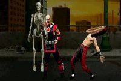 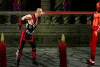 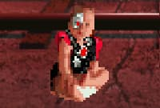 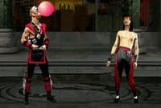 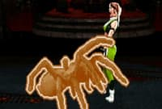
Fatality 1 - Skeleton Rip: (Hold LP), F, D, D, F, (Release LP) (Close)
Fatality 2 - Eye Laser: LP, BL, BL, HK (Outside Sweep)
Babality: F, F, D, D, LK (Anywhere)
Friendship - Bubblegum: LK, RN, RN, HK (Anywhere)
Animality - Spider: (Hold HP), BL, BL, BL, (Release HP) (Close)
Stage Fatality: (Hold BL), U, U, B, LK (Close)
Kung LaoBio:
Kung Lao's plan to reform the White Lotus Society comes to a halt when Shao Kahn's invasion takes the Earth by storm. As a Chosen Warrior, Kung Lao must use his greatest fighting skills to bring down Shao Kahn's reign of terror.
Special Moves:
Hat Throw: B, F, LP
Teleport: D, U (HP/HK to attack after)
Dive Kick: (D+HK) (In Air)
Whirlwind Spin: F, D, F, RN, (Tap RN Rapidly to Keep Spinning)
Finishers: 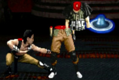 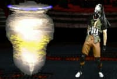 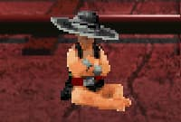 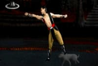 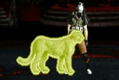
Fatality 1 - Hat Slice: F, F, B, D, HP (Close-Sweep)
Fatality 2 - Spin Cycle: RN, BL, RN, BL, D (Anywhere)
Babality: D, F, F, HP (Anywhere)
Friendship - Go Fetch: RN, LP, RN, LK (Anywhere)
Animality - Leopard: RN, RN, RN, RN, BL (Close)
Stage Fatality: D, D, F, F, LK (Close)
Liu KangBio:
After the Outworld invasion, Liu Kang finds himself the prime target of Kahn's extermination squads. He is the Shaolin Champion and has thwarted Kahn's schemes in the past. Of all the humans, Kang poses the greatest threat to Shao Kahn's rule.
Special Moves:
High Fireball: F, F, HP (Also in Air)
Low Fireball: F, F, LP
Flying Kick: F, F, HK
Bicycle Kick: (Hold LK 4 sec.), (Release LK)
Finishers: 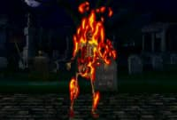 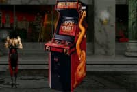 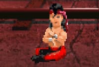 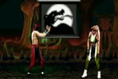 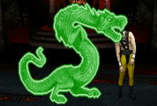
Fatality 1 - Fire Chi: F, F, D, D, LK (Anywhere)
Fatality 2 - Arcade Drop: (Hold BL), U, D, U, U, (Release BL), (BL+RN)
(Anywhere)
Babality: D, D, D, HK (Anywhere)
Friendship - Shadow Puppet: RN, RN, RN, (D+RN) (Anywhere)
Animality - Dragon: (Hold BL), D, D, U (Sweep)
Stage Fatality: RN, BL, BL, LK (Close)
NightwolfBio:
Nightwolf works as a historian and preserver of his people's culture. When Kahn's Portal opens over North America, Nightwolf uses the magics of his shaman to protect his tribe's sacred land. This area becomes a vital threat to Kahn's occupation of the
Earth.
Special Moves:
Spirit Arrow: D, B, LP
Tomahawk Swipe: D, F, HP
Shoulder Charge: F, F, LK
Projectile Reflector: B, B, B, HK
Finishers: 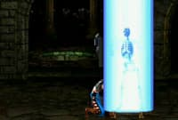 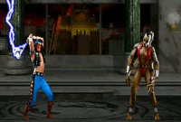 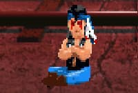 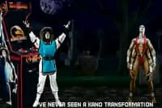 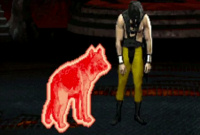
Fatality 1 - Spirit Light: (Hold BL), U, U, B, F, (Release BL), BL (Close)
Fatality 2 - Lightning Summon: B, B, D, HP (Half Screen)
Babality: F, B, F, B, LP (Anywhere)
Friendship - Raiden Transformation: RN, RN, RN, D (Half Screen-Full Screen)
Animality - Wolf: F, F, D, D (Close)
Stage Fatality: RN, RN, BL (Close)
SektorBio:
Sektor is actually the code name for unit LK-9T9. He was the first of three prototype cybernetic ninjas built by the Lin Kuei. Sektor was once a human assassin trained by the Lin Kuei. He volunteered for automation because of his loyalty for the clan.
Sektor survives the Outworld invasion - he has no soul to take.
Special Moves:
Missile: F, F, LP
Homing Missile: F, D, B, HP
Teleport Uppercut: F, F, LK (Also in Air)
Finishers: 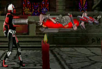 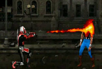 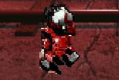 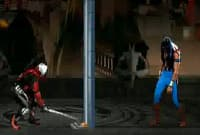 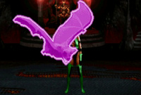
Fatality 1 - Compactor: LP, RN, RN, BL (Sweep)
Fatality 2 - Flamethrower: F, F, F, B, BL (Half Screen)
Babality: B, D, D, D, HK (Anywhere)
Friendship - Hammer Time: RN, RN, RN, RN, D (Half Screen-Full Screen)
Animality - Bat: F, F, D, U (Close)
Stage Fatality: RN, RN, RN, D (Close)
Shang TsungBio:
Shang Tsung is Shao Kahn's lead sorcerer. He once fell out of favor with his emperor after failing to win the Earthrealm through tournament battle. But the ever-scheming Shang Tsung is instrumental in Kahn's conquest of Earth. He has now been granted more
power than ever.
Special Moves:
Single Flaming Skull: B, B, HP
Double Flaming Skulls: B, B, F, HP
Triple Flaming Skulls: B, B, F, F, HP
Volcanic Triple Skulls: F, B, B, LK
Morphs:
Cyrax: BL, BL, BL
Jax: F, F, D, LP
Kabal: LP, BL, HK
Kano: B, F, BL (Quickly)
Kung Lao: RN, RN, BL, RN
Liu Kang: (Hold BL), F, D, B, U, F
Nightwolf: U, U, U
Sektor: D, F, B, RN
Sheeva: F, D, F, LK
Sindel: B, D, B, LK
Sonya: (D+LP+BL+RN)
Stryker: F, F, F, HK
Sub-Zero: F, D, F, HP
Finishers: 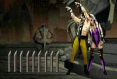 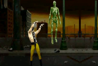 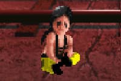 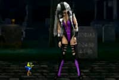 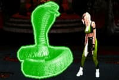
Fatality 1 - Bed of Nails: (Hold LP), D, F, F, D, (Release LP) (Close)
Fatality 2 - Soul Steal: (Hold LP), RN, BL, RN, BL, (Release LP) (Close)
Babality: RN, RN, RN, LK (Anywhere)
Friendship - Joust: LK, RN, RN, D (Anywhere)
Animality - Cobra: (Hold HP), RN, RN, RN, (Release HP) (Sweep)
Stage Fatality: (Hold BL), U, U, B, LP (Close)
SheevaBio:
She was hand-picked by Shao Kahn to serve as Sindel's personal protector. She becomes suspicious of Shao Kahn's loyalty towards her race of Shokan when he places Motaro as the leader of his extermination squads. On the Outworld, Motaro's race of Centaurians
are the natural enemy of the Shokan.
Special Moves:
Fireball: D, F, HP
Ground Pound: B, D, B, HK
Teleport Stomp: D, U
Finishers: 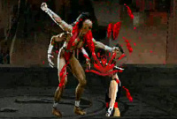 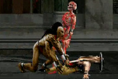 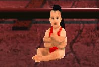 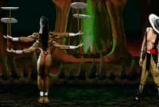
Fatality 1 - Nail Driver: F, D, D, F, LP (Close)
Fatality 2 - Skin Rip: (Hold HK), B, F, F, (Release HK) (Close)
Babality: D, D, D, B, HK (Anywhere)
Friendship - Spinning Plates: F, F, D, F, HP (Anywhere)
Animality - Scorpion: RN, BL, BL, BL, BL (Close)
Stage Fatality: D, F, D, F, LP (Close)
SindelBio:
She once ruled the Outworld at Shao Kahn's side as his queen. Now, 10,000 years after her untimely death, she is reborn on Earth. Her evil intent is every match for Shao Kahn's tyranny. She is the key to his occupation of Earth.
Special Moves:
Fireball: F, F, LP
Banshee Scream: F, F, F, HP
Levitate: B, B, F, HK (Press BL to land)
Air Fireball: D, F, LK (In Air)
Finishers:
Fatality 1 - Split Ends: RN, RN, BL, RN, BL (Sweep)
Fatality 2 - Banshee Screech: RN, BL, BL, (BL+RN) (Close)
Babality: RN, RN, RN, U (Anywhere)
Friendship - Field Goal: RN, RN, RN, RN, RN, U (Anywhere)
Animality - Wasp: F, F, (U+HP) (Sweep)
Stage Fatality: D, D, D, LP (Close)
SonyaBio:
Sonya disappeared after the first tournament but was later rescued from the Outworld by Jax. After returning to Earth, she and Jax try to warn the U.S. Government of the looming Outworld menace. Lacking proof, they watch helplessly as
Shao Kahn begins his invasion.
Special Moves:
Energy Rings: D, F, LP
Leg Grab: (D+LP+BL)
Square Wave Punch: F, B, HP
Rising Bicycle Kick: B, B, D, HK
Finishers:
Fatality 1 - Flame Kiss: B, F, D, D, RN (Anywhere)
Fatality 2 - Purple Haze: (Hold BL+RN), U, U, B, D (Half Screen-Full Screen)
Babality: D, D, F, LK (Anywhere)
Friendship - Swing Arms: B, F, B, (D+RN) (Anywhere)
Animality - Hawk: (Hold LP), B, F, D, F, (Release LP) (Close)
Stage Fatality: F, F, D, HP (Close)
StrykerBio:
When the Outworld Portal opens over a large city in North America, panic and chaos raged out of control. Kurtis Stryker was the leader of a riot control brigade when Shao Kahn began taking souls. He finds himself the lone survivor of a city once populated
by millions.
Special Moves:
Low Grenade: D, B, LP
High Grenade: D, B, HP
Baton Trip: F, B, LP
Baton Throw: F, F, HK
Finishers:
Fatality 1 - Explosives: D, F, D, F, BL (Close)
Fatality 2 - Tazer: F, F, F, LK (Full Screen)
Babality: D, F, F, B, HP (Anywhere)
Friendship - Crossing Guard: LP, RN, RN, LP (Anywhere)
Animality - T-Rex: RN, RN, RN, BL (Sweep)
Stage Fatality: (Hold BL), F, U, U, HK (Close)
Sub-ZeroBio:
The ninja returns unmasked. He was betrayed by his own ninja clan - the Lin Kuei. He broke sacred codes of honor by leaving the clan and is marked for death. But unlike the ninja of old, his pursuers come as machines. He must not only defend against the
Outworld menace, but must also elude his soulless assassins.
Special Moves:
Freeze: D, F, LP
Slide: (B+LP+LK+BL)
Ice Clone: D, B, LP (Also in Air)
Ice Shower: D, F, HP
Ice Shower - Front: D, F, B, HP
Ice Shower - Behind: D, B, F, HP
Finishers:
Fatality 1 - Overhead Ice Shatter: BL, BL, RN, BL, RN (Close)
Fatality 2 - Frosty!: B, B, D, B, RN (Outside Sweep)
Babality: D, B, B, HK (Anywhere)
Friendship - Snowman: LK, RN, RN, U (Anywhere)
Animality - Polar Bear: (Hold BL), F, U, U (Close)
Stage Fatality: B, D, F, F, HK (Close)
Smoke
(Hidden/Unlockable)Bio:
Smoke, unit LK-7T2, is the third prototype cyber-ninja built by the Lin Kuei. He tried to escape the automation process with Sub-Zero but was captured. His memories were stripped away, leaving behind an emotionless killer. However, Sub-Zero believes that
within this machine is a human soul trying to escape.
Special Moves:
Spear: B, B, LP
Teleport Uppercut: F, F, LK (Also in Air)
Invisibility: (Hold BL), U, U, RN
Air Throw: BL (In Air, Close)
Finishers:
Fatality 1 - Armageddon: (Hold BL), U, U, F, D (Half Screen-Full Screen)
Fatality 2 - Smoke Bomb: (Hold BL+RN), D, D, F, U (Sweep)
Babality: D, D, B, B, HK (Anywhere)
Friendship - Foghorn: RN, RN, RN, HK (Half Screen-Full Screen)
Animality - Bull: D, F, F, BL (Half Screen-Full Screen)
Stage Fatality: F, F, D, LK (Close)
Fight Smoke:
Versus Screen Code: 205-205
Player one: Press LP (x2), LK (x5)
Player two: Press LP (x2), LK (x5)
Unlock Smoke:
Arcade Version:
To Play as Smoke, enter the code 10902-22234 at the Ultimate Kombat Kode Screen after losing a match:
Player 1: HPx1, HKx2, BLx9, LP x0, LKx0
Player 2: HPx2, HKx4, BLx2, LP x2, LKx3
SNES Version:
Turn on the system.
At the first screen, hold ( +A).
+A).
At the second screen, hold ( +B).
+B).
At the third screen, press (X+Y).
If the code is done correctly, Smoke will walk out onto the next screen. Now he is at your command.
Or, At Start/Options screen, press "SELECT, A, B,  ,
,
 ,
,  ,
,
 ,
,  ,
,
 ".
".
Unlocks "Kooler Stuff".
Smoke can be activated there.
Sega Genesis Version:
Turn on the game. Wait for the MK3 logo to appear.
When you hear the bell, press "A, B, B, A,  , A, B,
B, A,
, A, B,
B, A,  ,
,  ,
,
 ".
".
Or, On the main menu press "C,  , A,
, A,  , A,
, A,
 , C,
, C,  , A,
, A,
 , A,
, A,  ".
".
Unlocks "Killer Codes".
Smoke can be activated there.
PlayStation Version:
To play as Smoke, enter the code 010-696 on the Kombat Kode screen.
L1x0/R1x1/▢x0/( +Δ)x4/(
+Δ)x4/( +O)x1/(
+O)x1/( +✕)x4
+✕)x4
Or, At the trademark screen, press ▢, ✕, O, Δ, R1, R1, R2,
R2, R1, R1.
You should hear Shao Kahn say, "You will never win."
Press Up when the screen with the spinning MK3 logo on the cube that says: "Kombat" is on-screen.
A question mark appears.
Smoke can be activated there.
Noob Saibot (Hidden)Fight Noob Saibot:
During a 2-Player VS Match, use the Kombat Kode 769-342.
The winner of the match fights Noob Saibot.
Motaro (Sub-Boss) Bio:
In the realm of the Outworld, Motaro's race of Centaurians has long since come into conflict with the Shokan. When Shao Kahn formed special extermination squads to eliminate the Chosen Warriors of Earth, Motaro was appointed to head this elite group of
savage warriors.
Special Moves (SNES/GEN):
Fireball: D, B, HP
Grab and Punch: F, F, LP
Teleport: D, U
Fight Motaro:
Work your way up the tournament brackets. Motaro will be next to last if you make it that far...
During a 2-Player VS Match, use the Kombat Kode 969-141.
The winner of the match fights Motaro.
Unlock Motaro:
SNES Version:
At Start/Options screen, press "SELECT, A, B,  ,
,
 ,
,  ,
,
 ,
,  ,
,
 ".
".
Unlocks "Kooler Stuff".
Motaro can be activated there.
Sega Genesis Version:
On the main menu press "C,  , A,
, A,  , A,
, A,
 , C,
, C,  , A,
, A,
 , A,
, A,  ".
".
Unlocks "Killer Codes".
Motaro can be activated there.
Shao Kahn (Boss)Bio:
Many decades ago, Shao Kahn rose to power in the Outworld, usurping the realm from Kitana's parents and taking Queen Sindel for his bride. Then she died. Now, centuries later, Sindel is reborn. And since Shang Tsung failed to win the Earthrealm through
Mortal Kombat I and II, her rebirth is the means by which Kahn will finally seize the planet forever unless...
Special Moves (SNES/GEN):
Fireball: B, B, F, LP
Shoulder Charge: F, F, LP
Rising Charge: F, F, HP
Hammer Smash: B, F, HP
Taunt: D, D, LK
Laugh: D, D, HK
Fight Shao Kahn:
Shao Kahn will be the last opponent you have to battle in this 3rd tournament. Beating him means freeing the Earthrealm from his vengeance. But to get there you must beat a number of worthy opponents, and then the fierce Motaro before you can take the
big man on. Good luck, Earth is counting on you...
During a 2-Player VS Match, use the Kombat Kode 033-564.
The winner of the match fights Shao Kahn.
Unlock Shao Kahn:
SNES Version:
At Start/Options screen, press "X, B, A, Y,  ,
,
 ,
,  ,
,
 ,
,  ".
".
Unlocks "Scott's Stuff".
Shao Kahn can be activated there.
Sega Genesis Version:
On the main menu press "C,  , A,
, A,  , A,
, A,
 , C,
, C,  , A,
, A,
 , A,
, A,  ".
".
Unlocks "Killer Codes".
Shao Kahn can be activated there.